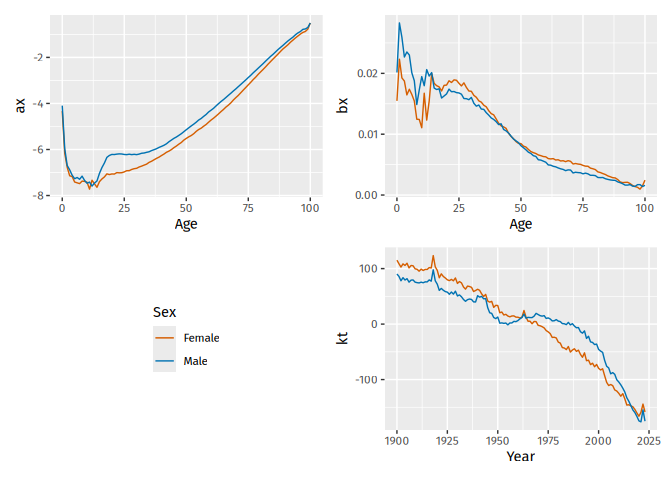

The goal of vital is to allow analysis of demographic data using tidy tools.
Installation
You can install the stable version from CRAN:
pak::pak("vital")You can install the development version from Github:
pak::pak("robjhyndman/vital")Examples
First load the necessary packages.
vital objects
The basic data object is a vital, which is time-indexed tibble that contains vital statistics such as births, deaths, population counts, and mortality and fertility rates.
We will use Norwegian data in the following examples. First, let’s remove the “Total” Sex category and collapse the upper ages into a final age group of 100+.
nor <- norway_mortality |>
filter(Sex != "Total") |>
collapse_ages(max_age = 100)
nor
#> # A vital: 35,754 x 6 [1Y]
#> # Key: Age x Sex [101 x 2]
#> Year Age OpenInterval Sex Population Mortality
#> <int> <int> <lgl> <chr> <dbl> <dbl>
#> 1 1846 0 FALSE Female 17990 0.109
#> 2 1846 1 FALSE Female 16132 0.0498
#> 3 1846 2 FALSE Female 16404 0.0279
#> 4 1846 3 FALSE Female 17564 0.0205
#> 5 1846 4 FALSE Female 16352 0.0140
#> 6 1846 5 FALSE Female 14538 0.00995
#> 7 1846 6 FALSE Female 13426 0.00861
#> 8 1846 7 FALSE Female 13531 0.00735
#> 9 1846 8 FALSE Female 13664 0.00628
#> 10 1846 9 FALSE Female 13746 0.00457
#> # ℹ 35,744 more rowsThis example contains data from 1846 to 2022. It must have a time “index” variable, and optionally other categorical variables known as “key” variables. Each row must have a unique combination of the index and key variables. Some columns are “vital” variables, such as “Age” and “Sex”.
We can use functions to see which variables are index, key or vital:
index_var(nor)
#> [1] "Year"
key_vars(nor)
#> [1] "Age" "Sex"
vital_vars(nor)
#> age sex population
#> "Age" "Sex" "Population"Plots
There are autoplot() functions for plotting vital objects. These produce rainbow plots where each line represents data for one year, and the variable is plotted against age.
nor |>
autoplot(Mortality) + scale_y_log10()
We can use standard ggplot functions to modify the plot as desired. For example, here are population pyramids for all years.
nor |>
mutate(Population = if_else(Sex == "Female", -Population, Population)) |>
autoplot(Population) +
coord_flip() +
facet_grid( . ~ Sex, scales = "free_x")
Life tables and life expectancy
Lifetables can be produced using the life_table() function. It will produce lifetables for each unique combination of the index and key variables other than age.
# Lifetable in 2000
nor |>
filter(Year == 2000) |>
life_table()
#> # A vital: 202 x 13 [?]
#> # Key: Age x Sex [101 x 2]
#> Year Age Sex mx qx lx dx Lx Tx ex rx nx
#> <int> <int> <chr> <dbl> <dbl> <dbl> <dbl> <dbl> <dbl> <dbl> <dbl> <dbl>
#> 1 2000 0 Fema… 3.28e-3 3.27e-3 1 3.27e-3 0.997 81.4 81.4 0.997 1
#> 2 2000 1 Fema… 2.77e-4 2.77e-4 0.997 2.76e-4 0.997 80.4 80.6 1.00 1
#> 3 2000 2 Fema… 3.09e-4 3.09e-4 0.996 3.08e-4 0.996 79.4 79.7 1.00 1
#> 4 2000 3 Fema… 1.33e-4 1.33e-4 0.996 1.32e-4 0.996 78.4 78.7 1.00 1
#> 5 2000 4 Fema… 1.68e-4 1.68e-4 0.996 1.67e-4 0.996 77.4 77.7 1.00 1
#> 6 2000 5 Fema… 3.30e-5 3.30e-5 0.996 3.29e-5 0.996 76.4 76.7 1.00 1
#> 7 2000 6 Fema… 1.35e-4 1.35e-4 0.996 1.34e-4 0.996 75.4 75.7 1.00 1
#> 8 2000 7 Fema… 1.68e-4 1.68e-4 0.996 1.67e-4 0.996 74.4 74.7 1.00 1
#> 9 2000 8 Fema… 6.70e-5 6.70e-5 0.996 6.67e-5 0.995 73.4 73.7 1.00 1
#> 10 2000 9 Fema… 1.97e-4 1.97e-4 0.995 1.96e-4 0.995 72.4 72.7 1.00 1
#> # ℹ 192 more rows
#> # ℹ 1 more variable: ax <dbl>Life expectancy (ex with x = 0 by default) is computed using life_expectancy():
# Life expectancy
nor |>
life_expectancy() |>
ggplot(aes(x = Year, y = ex, color = Sex)) +
geom_line()
Smoothing
Several smoothing functions are provided: smooth_spline(), smooth_mortality(), smooth_fertility(), and smooth_loess(), each smoothing across the age variable for each year.
# Smoothed data
nor |>
filter(Year == 1967) |>
smooth_mortality(Mortality) |>
autoplot(Mortality) +
geom_line(aes(y = .smooth), col = "blue") +
ylab("Mortality rate") +
scale_y_log10()
Lee-Carter models
Lee-Carter models (Lee & Carter, JASA, 1992) are estimated using the LC() function which must be called within a model() function:
# Lee-Carter model
lc <- nor |>
model(lee_carter = LC(log(Mortality)))
lc
#> # A mable: 2 x 2
#> # Key: Sex [2]
#> Sex lee_carter
#> <chr> <model>
#> 1 Female <LC>
#> 2 Male <LC>Models are fitted for all combinations of key variables excluding age. To see the details for a specific model, use the report() function.
lc |>
filter(Sex == "Female") |>
report()
#> Series: Mortality
#> Model: LC
#> Transformation: log(Mortality)
#>
#> Options:
#> Adjust method: dt
#> Jump choice: fit
#>
#> Age functions
#> # A tibble: 101 × 3
#> Age ax bx
#> <int> <dbl> <dbl>
#> 1 0 -3.73 0.0156
#> 2 1 -5.25 0.0232
#> 3 2 -5.86 0.0216
#> 4 3 -6.22 0.0214
#> 5 4 -6.33 0.0193
#> # ℹ 96 more rows
#>
#> Time coefficients
#> # A tsibble: 177 x 2 [1Y]
#> Year kt
#> <int> <dbl>
#> 1 1846 83.2
#> 2 1847 95.7
#> 3 1848 93.8
#> 4 1849 88.5
#> 5 1850 86.1
#> # ℹ 172 more rows
#>
#> Time series model: RW w/ drift
#>
#> Variance explained: 78.83%The results can be plotted.
autoplot(lc)
The components can be extracted.
age_components(lc)
#> # A tibble: 202 × 4
#> Sex Age ax bx
#> <chr> <int> <dbl> <dbl>
#> 1 Female 0 -3.73 0.0156
#> 2 Female 1 -5.25 0.0232
#> 3 Female 2 -5.86 0.0216
#> 4 Female 3 -6.22 0.0214
#> 5 Female 4 -6.33 0.0193
#> 6 Female 5 -6.58 0.0197
#> 7 Female 6 -6.66 0.0186
#> 8 Female 7 -6.72 0.0176
#> 9 Female 8 -6.69 0.0152
#> 10 Female 9 -6.74 0.0147
#> # ℹ 192 more rows
time_components(lc)
#> # A tsibble: 354 x 3 [1Y]
#> # Key: Sex [2]
#> Sex Year kt
#> <chr> <int> <dbl>
#> 1 Female 1846 83.2
#> 2 Female 1847 95.7
#> 3 Female 1848 93.8
#> 4 Female 1849 88.5
#> 5 Female 1850 86.1
#> 6 Female 1851 85.3
#> 7 Female 1852 87.2
#> 8 Female 1853 94.0
#> 9 Female 1854 79.3
#> 10 Female 1855 80.8
#> # ℹ 344 more rowsForecasts are obtained using the forecast() function
# Forecasts from Lee-Carter model
lc |>
forecast(h = 20)
#> # A vital fable: 4,040 x 6 [1Y]
#> # Key: Age x (Sex, .model) [101 x 2]
#> Sex .model Year Age Mortality .mean
#> <chr> <chr> <dbl> <int> <dist> <dbl>
#> 1 Female lee_carter 2023 0 t(N(-5.1, 0.03)) 0.00614
#> 2 Female lee_carter 2024 0 t(N(-5.1, 0.06)) 0.00613
#> 3 Female lee_carter 2025 0 t(N(-5.1, 0.09)) 0.00613
#> 4 Female lee_carter 2026 0 t(N(-5.2, 0.12)) 0.00613
#> 5 Female lee_carter 2027 0 t(N(-5.2, 0.15)) 0.00612
#> 6 Female lee_carter 2028 0 t(N(-5.2, 0.18)) 0.00612
#> 7 Female lee_carter 2029 0 t(N(-5.2, 0.21)) 0.00612
#> 8 Female lee_carter 2030 0 t(N(-5.2, 0.25)) 0.00611
#> 9 Female lee_carter 2031 0 t(N(-5.2, 0.28)) 0.00611
#> 10 Female lee_carter 2032 0 t(N(-5.2, 0.31)) 0.00610
#> # ℹ 4,030 more rowsThe forecasts are returned as a distribution column (here transformed normal because of the log transformation used in the model). The .mean column gives the point forecasts equal to the mean of the distribution column.
Functional data models
Functional data models (Hyndman & Ullah, CSDA, 2007) can be estimated in a similar way to Lee-Carter models, but with an additional smoothing step, then modelling with LC replaced by FDM.
# FDM model
fit <- nor |>
smooth_mortality(Mortality) |>
model(hu = FDM(log(.smooth)))
fc <- fit |>
forecast(h = 20)
autoplot(fc) +
scale_y_log10()
Coherent functional data models
A coherent functional data model (Hyndman, Booth & Yasmeen, Demography, 2013), is obtained by first computing the sex-products and sex-ratios of the smoothed mortality data. Then a functional data model is fitted to the smoothed data, forecasts are obtained, and the product/ratio transformation is reversed. The following code shows the steps.
fit <- nor |>
smooth_mortality(Mortality) |>
make_pr(.smooth) |>
model(hby = FDM(log(.smooth), coherent = TRUE))
fc <- fit |>
forecast(h = 20) |>
undo_pr(.smooth)Here, make_pr() makes the product-ratios, while undo_pr() undoes them.
The argument coherent = TRUE in FDM() ensures that the ARIMA models fitted to the coefficients are stationary when applied to the sex-ratios.